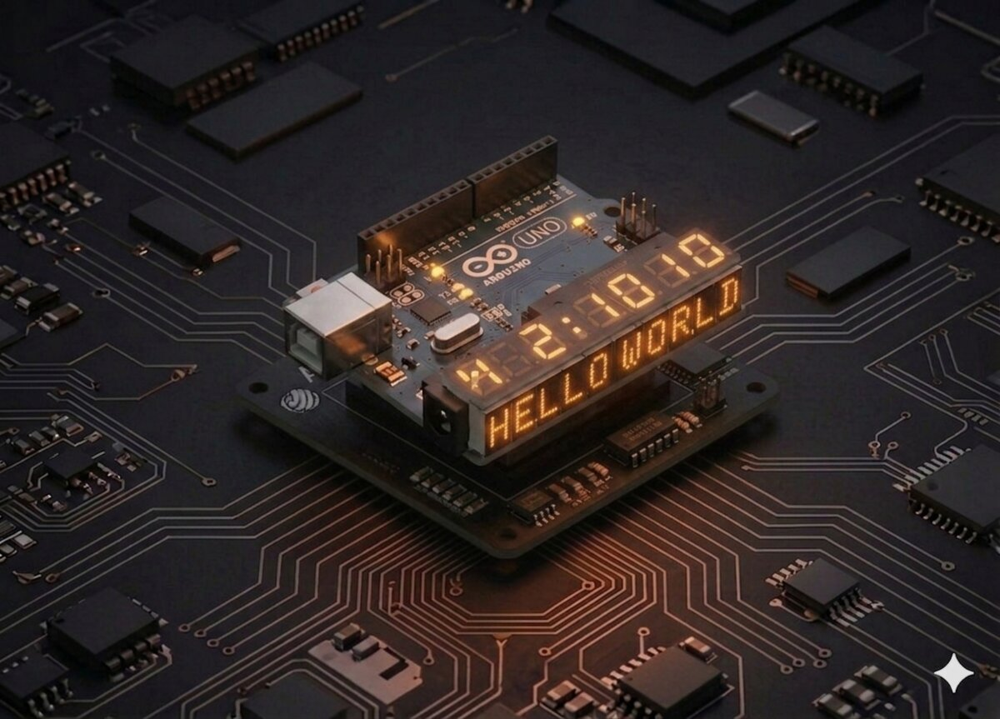

Arduino
Afișaj 7 segmente
Afișează cifrele 0-9 pe un afișaj cu 7 segmente — controlat prin registrul de deplasare 74HC595.
Arduino
7-Segment
74HC595
Afișaj
Numere
Afișaj cu 7 segmente¶
Afișajele cu 7 segmente sunt omniprezente: ceasuri digitale, microunde, cuptoare, afișaje de prețuri. Înveți cum să afișezi cifre pe ele.

Componente necesare¶
| Componentă | Cantitate |
|---|---|
| Arduino Uno R3 | 1 |
| Breadboard 830 puncte | 1 |
| 74HC595 IC | 1 |
| Afișaj 7-segmente 1 cifră (catod comun) | 1 |
| Rezistență 220 Ω | 8 |
| Fire jumper M-M | 26 |
Cum funcționează¶
Un afișaj cu 7 segmente are 7 LED-uri dispuse în forma cifrei 8, plus un al 8-lea (DP — Decimal Point). Ca să formezi o cifră, aprinzi combinația corectă.
| Cifră | Segmente aprinse |
|---|---|
| 0 | a, b, c, d, e, f |
| 1 | b, c |
| 2 | a, b, d, e, g |
| 3 | a, b, c, d, g |
| 4 | b, c, f, g |
| 5 | a, c, d, f, g |
| 6 | a, c, d, e, f, g |
| 7 | a, b, c |
| 8 | a, b, c, d, e, f, g |
| 9 | a, b, c, d, f, g |
Catod comun vs anod comun¶
- Catod comun: toate catodurile sunt legate la GND. Segmentele se aprind când primesc
HIGH. - Anod comun: toate anozii sunt la +5V. Segmentele se aprind când primesc
LOW.
În kit este catod comun, deci pinii 3 și 8 (pinii comuni) merg la GND.
Maparea 74HC595 → segmente¶
| Q output | Segment afișaj |
|---|---|
| Q0 | A |
| Q1 | B |
| Q2 | C |
| Q3 | D |
| Q4 | E |
| Q5 | F |
| Q6 | G |
| Q7 | DP |
Cu aceeași logică de shiftOut() ca la Proiect 16, trimitem un byte unde fiecare bit corespunde unui segment.
Conectare¶
74HC595 conectat ca la Proiect 16, dar în loc de LED-uri ai afișajul:
| 74HC595 | Arduino/Altceva |
|---|---|
| DS (pin 14) | D2 |
| ST_CP (pin 12) | D3 |
| SH_CP (pin 11) | D4 |
| VCC, MR | 5V |
| GND, OE | GND |
| Q0–Q7 | prin 220 Ω la segmentele A–DP ale afișajului |
| Pin 3, 8 ai afișajului | GND (catod comun) |
Cod¶
/*
* Proiect 19 — Afișaj 7-segmente cu 74HC595
* Numără de la 9 la 0.
*/
int dataPin = 2;
int latchPin = 3;
int clockPin = 4;
// Tabelul cifrelor (catod comun): bit 7=DP, 6=G, 5=F, 4=E, 3=D, 2=C, 1=B, 0=A
byte digits[10] = {
B00111111, // 0
B00000110, // 1
B01011011, // 2
B01001111, // 3
B01100110, // 4
B01101101, // 5
B01111101, // 6
B00000111, // 7
B01111111, // 8
B01101111 // 9
};
void displayDigit(byte d) {
digitalWrite(latchPin, LOW);
shiftOut(dataPin, clockPin, LSBFIRST, digits[d]);
digitalWrite(latchPin, HIGH);
}
void setup() {
pinMode(dataPin, OUTPUT);
pinMode(latchPin, OUTPUT);
pinMode(clockPin, OUTPUT);
}
void loop() {
for (int i = 9; i >= 0; i--) {
displayDigit(i);
delay(1000);
}
}
Ce să încerci¶
- Numără în sus (0 → 9) și încearcă să adaugi punctul zecimal.
- Afișează un cronometru care se activează la apăsarea unui buton.
- Arată câte obstacole detectează senzorul ultrasonic sub 50 cm.
- Fă un mic joc: tasta apăsată pe keypad (Proiect 13) apare pe afișaj.
Note¶
- Dacă ai afișaj anod comun, inversează toți biții:
~digits[d]. - Segmentele vin în ordine diferită pe diverse afișaje. Citește datasheet-ul.
- Segmentele luminează prea tare? Crește rezistența la 330 Ω sau 470 Ω.
Vezi și: Toate proiectele kit-ului